Hello and welcome! My name is Hana (or any of the names listed.) Welcome to my kitty corner on the internet. I spend a lot of my time online, either playing video games, working on projects, or completing commissions for my business.
I am a black american, and I speak English and French almost fluently. I am also learning Korean for the fun of it! I can write very basic conversations in Korean right now, but I am still working on improving my (spoken) Korean.
I like to consider myself a bright and positive person, always striving to help other people (unfortunately, even when it's unwarrented... I'm working on it!) and design things that other people can enjoy as much as me. I'm a lover of both minimalistic and maximalistic aesthetics, finding my home in business casual, comfy, and princess pink fashion. I am also a stark maximalist when it comes to home decoration. You can find me hanging around maximalist groups and saving colorful home design on Pinterest.
I am the host of an OSDD-1b system, aware of some kind of plurality since 2012, but diagnosed in 2020. I have numerous headmates, and multiple instances of myself that hold a pletora of different interests. Please visit the parent site to learn a bit more about my headmates.
For this site, I wanted the inspiration to be Yandere Sim, magical girls, anime, and kpop idols! The latter of these concepts will become more clear as I continue to work on this site.
If you'd like to get in contact with me, check the Webmiss Contact app! It is always morally correct to message me at any of these places! While I may not respond immediately, I will get back to you as soon as I am able! I get distracted super easily!
| Hobbies |
Coding, playing video games, and design are my main hobbies. I've also picked up blogging and reading manga lately. As much as I love anime characters, I never really bothered watching too many anime or reading manga until lately. |
|---|
| Content Creators |
My current favorite content creators are Markiplier, ChubbyEmu, Angel_Taco, Oddwin, Insym, WarnTV, One Pump Willie, and Eleyzhau |
|---|
| Video Games |
Right now, my favorite replayable games are Phasmophobia, Satisfactory, VRChat, Overwatch, The Sims 4, and Yandere Simulator, although I fucking despise the creator. As for the Hall of Fame: Subnautica, Undertale, OMORI, Starbound, VRChat, and League of Legends. See the gamelog for more! |
|---|
| Music Preferences |
I like anything with a good enough beat, but I especially like KPOP (XG, WEEEKLY, TWICE, YENA), Pop (Sabrina Carpenter, Kali Uchis) and Synthwave (Macross 82-99, Yung Bae, Desire, Master Stryker, Vantage). I also listen to underground music quite a lot. |
|---|

 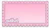
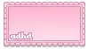


 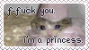
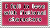
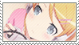
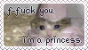
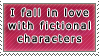
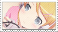
 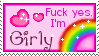
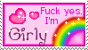


 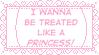
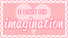
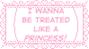
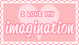